Test
Summary
Test is a quiz and exam tool with a wide range of uses from informal quizzes to summative exams.
This guide covers how to create and set up a Test, and is aimed at teaching staff and administrators.
Relevant VLE site design principles
- 3.4 Essential: Site and materials content is accessible.
- 4.1 Essential: The assessment section contains all information about module assessments.
- 4.2 Essential: Assessment instructions are clearly labelled and explain the task and requirements.
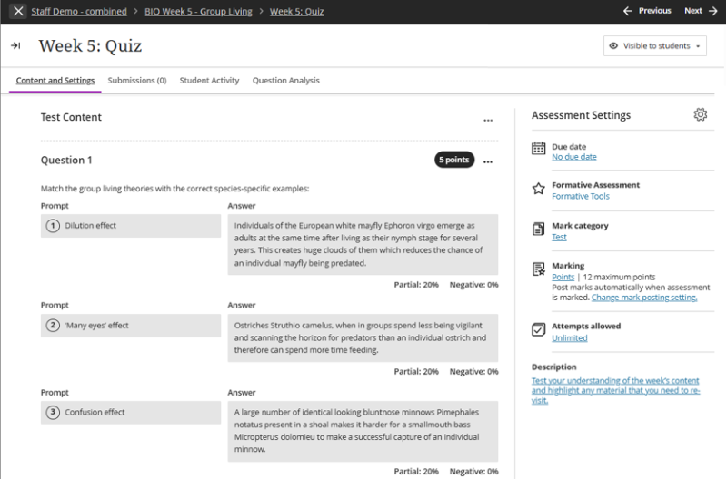
Uses of Test: overview
Tip
If your intended usage involves long written answers or file uploads (especially where this needs to be anonymous), another tool will likely be more appropriate.
Test is best used for tasks with 'right answer' questions and automatic marking, although it can include manually marked Essay-type questions with short open text input.
This section summarises some common uses of Test and suggested settings as a quick overview. See later sections for more detail on specific aspects of building and implementing a Test.
Practice quiz
A formative quiz that can be taken many times, usually to practise specific content.
There is no deadline or time limit. Marks and feedback are automatically returned immediately after submission, without direct input from module staff.
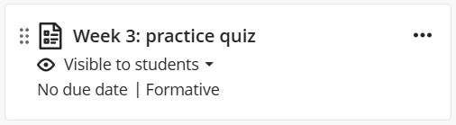
Practice quiz: details & suggested settings
Test location within Learn Ultra VLE site
In most cases, put the quiz alongside the content it relates to. Ie. a quiz practicing week 5 content should appear in the week 5 section.
Questions, presentation and marking
- Includes auto-marked question types only.
- Often uses randomisation to present questions in a different order in each attempt, and/or question pools to draw a random subset of questions from a larger bank of questions.
- May use pagination to break up longer Tests or to manage question order.
- Results are automatically released immediately after the quiz is submitted.
Suggested settings
Leave all settings not mentioned here unticked or as the default.
- Details & Information
- Due date: tick No due date
- Presentation Options
- Display one question at a time: tick if using LaTeX to improve rendering
- Randomisation options: tick Randomise questions and Randomise answers
- Formative Tools
- Formative assessment: tick to show a Formative label
- Marking & Submissions
- Attempts allowed: set to Unlimited
- Assessment mark: leave Post assessment marks automatically ticked
- Assessment results:
- Submission view: tick, set to after submission
- Automated question feedback: tick, set to after individual mark has been posted
- Question scores: tick, set to after individual mark has been posted
- Correct answers: tick, set to after individual mark has been posted
- Description: add a short contextual description to display under the item's name in the Course Content area.
Case study: Ultra Test for practice quizzes [Language & Linguistic Science]
Ellie Rye provides a walkthrough of the 'Structure of English' Ultra site, describing how they applied the Ultra template to present teaching content, and reflects on the use of Discussions and Tests for formative practice quizzes.
Watch their presentation:
Structure of English (Panopto viewer) (8 mins 21 secs, UoY log-in required)
See the full case study for more details and the transcript. You can also browse our full set of case studies.
Summative coursework quiz or task
A quantitative quiz, problem set or other task completed remotely and asynchronously in a students' own time.These are classified as coursework, not as exams; here a Test attempt is analogous to an assignment file submission.
Usually has a deadline, but no time limit. Students can request extensions and late submissions must be accepted.
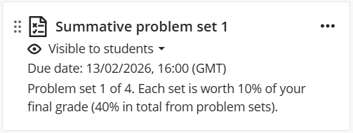
Summative coursework task: details & suggested settings
Tip
If you are in any doubt about the appropriate settings for your Test, please contact us for advice or to check settings before the task is made available to students.
If setting a due date, liaise with your departmental assessment administration team to manage deadline extensions for SSPs, ECAs etc.
Test location within Learn Ultra VLE site
All formal assessment items should be located in the Assessment section.
Questions, presentation and marking
- Often includes auto-marked question types only, but can include some manually marked short answer Essay-type questions.
- May use randomisation to present questions in a different order in each attempt, and/or question pools to draw a random subset of questions from a larger bank of questions.
- May use pagination to break up longer Tests or to manage question order.
- May use anonymity if requires manual marking, but this makes administration more complex.
Suggested settings
Leave all settings not mentioned here unticked or as the default.
- Details & Information
- Due date: set a due date and time during work hours or tick No due date if no deadline is required.
- If setting a due date, liaise with your departmental assessment administration team to manage deadline extensions for SSPs, ECAs etc.
- Do not tick the options Prohibit late submissions or Prohibit new attempts after due date. Assessment policy states that students must be able to submit work late.
- Presentation Options
- Display one question at a time: tick if using LaTeX to improve rendering
- Randomisation options: tick as required.
- Marking & Submissions
- Mark category: optionally set to Assignment.
- Attempts allowed: set to Unlimited.
- Attempts to mark: set to Last attempt (may need to identify the last on time submission if a late submission is made, see the Assignment marking guide).
- Anonymous marking: Hide student names: tick if anonymous marking is required.
- Assessment mark: untick Post assessment marks automatically to manually release marks all together.
- Assessment results:
- Submission view: tick, set to after submission
- Other options:
- if should be shown to students, tick and set to specific date with the date of mark release.
- is should not be shown to students, leave unticked.
- Description: add a short contextual description to display under the item's name in the Course Content area.
Formal exams
Warning
To run a formal summative exam using Test, you must contact us well in advance to set up and manage the exam procedure. This is to facilitate Test administration and comply with University assessment policy requirements.
A scheduled summative exam during CAP or other assessment period, either remotely on in-person. Requires a separate exam site and very specific set up.
Some questions may require manual marking, possibly anonymously, but there are no long text answers or file uploads. Scores and feedback are released manually on a specific date.
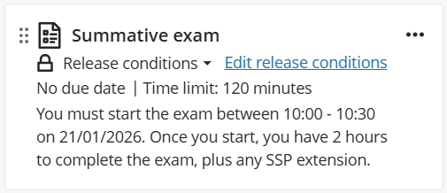
Formal exam: summary of procedure
Warning
Formal exams are run very differently to asynchronous uses of Test. The appropriate set up depends on the specific exam requirements; contact us to advise on your specific exam. Information here is an overview only, and should not be considered sufficient guidance for running formal exams with Test.
Test location within Learn Ultra VLE site
We will set up a separate exam site for formal exams using Test. This is required for smooth administration and exam security.
Questions, presentation and marking
- Often includes auto-marked question types only, but can include some manually marked short answer Essay-type questions.
- May use randomisation to present questions in a different order in each attempt, and/or question pools to draw a random subset of questions from a larger bank of questions.
- May use pagination to break up longer Tests or to manage question order.
- May use anonymity if requires manual marking, but this makes administration more complex.
Procedure overview
As an illustrative example, the general procedure for remote exams is:
- The Test is set up in a separate exam VLE site before the CAP.
- On exam day, students have a specific start window to begin the Test (eg. 10:00 - 10:30 am).
- Once each student starts, they have the full scheduled time to complete the exam plus any SSP extension (eg 2 hours + 25%).
- At the end of the start window, any non-starters are deemed to be absent and their access to the exam site is removed. This is much easier to manage for non-anonymous Tests.
- Students manually submit when finished, or the exam automatically submits if the end of their individual time limit is reached.
- The Test and exam site are hidden from students.
- Any manual marking occurs and final marks are processed.
- Marks and feedback are released to students at the end of the CAP.
In-person exams have a different procedure to align with the different assessment policy requirements.
Case study: Ultra Test for formative and summative assessment [Computer Science]
Tommy Yuan shares his experiences of using the Ultra test tool for formative and summative assessment. Topics include how it can save time for lecturers and administrators, and reduce the likelihood of collusion and academic misconduct.
Watch his presentation:
VLE Test for assessment (Panopto viewer) (6 mins 59 secs, UoY log-in required)
See the full case study for more details and the transcript. You can also browse our full set of case studies.
Considerations
Accessibility
There are some particular accessibility considerations when creating Test questions, along with all the usual accessibility considerations.
Tip
Colour blindness is common and not generally disclosed. You should always consider colour blindness for any colour choices in your Test images or figures.
- Appropriately describe relevant information:
- simple images: add ALT text describing the key information to answer the question.
- complex images: provide a separate text description (eg. data in table format, description of a diagram etc.).
- Consider use of colour: don't convey meaning by colour alone, avoid red/green combinations and use a high enough contrast between foreground and background.
- Use high resolution images to prevent pixelation or blurriness when zooming in.
See our guide to accessible images in Ultra sites for more details.
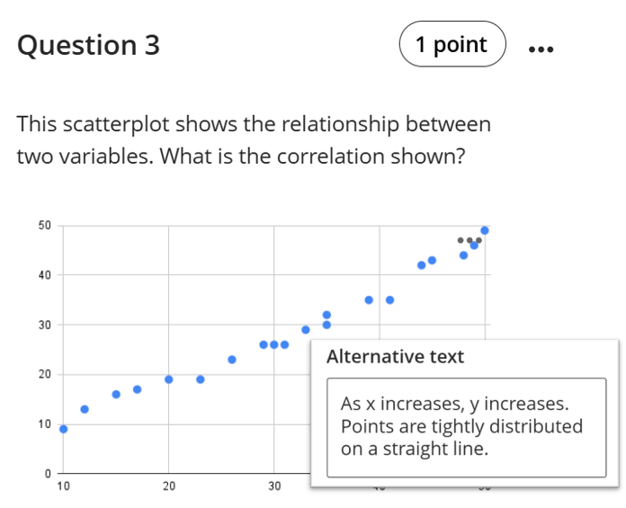
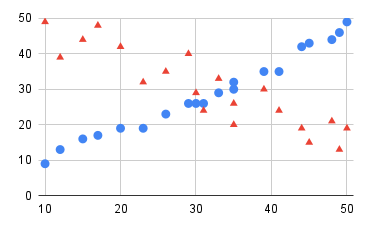
Content visibility
Make sure that the content needed to answer a question can be easily viewed on screen. Avoid requiring students to scroll through dropdowns, move between pages, or other situations where they can't see all of the relevant question content at once.
General considerations:
- Students may be taking the Test on a laptops or or other small screen, so trial your test in Student Preview mode to make sure content can be easily seen on a small screen.
- Do not split information needed to answer a question across different pages.
Considerations for images in matching questions:
- Best practice: if using multiple images in the same question, consider splitting these into separate questions to make images clearer. Eg. instead of a matching question with five plots, split each into its own multiple choice question with the same answer options.
- If images must be used in Matching questions, put images inside the Prompt, not the Answer portion. This means students can see all the answer options together for each image. However, notes that images may be shown quite small due to the layout for this question type.
- Do not put images as the answer options. This options can't be viewed at once and requires scrolling through the drop down to see all images. This makes it difficult to compare images, especially if they are similar.
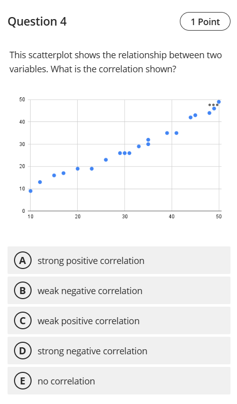
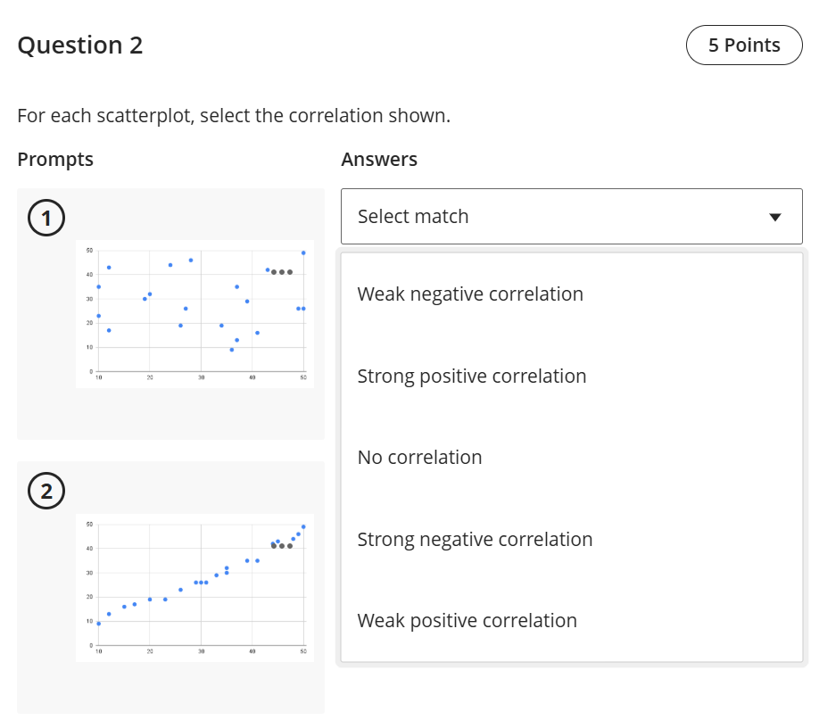
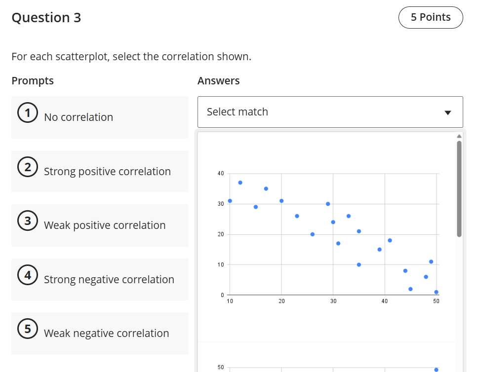
Randomisation
Randomisation is a very useful tool for creating robust assessments, particularly in remote settings through limiting collusion opportunities. Test has various randomisation methods, which can be combined:
Random order: Test presentation options
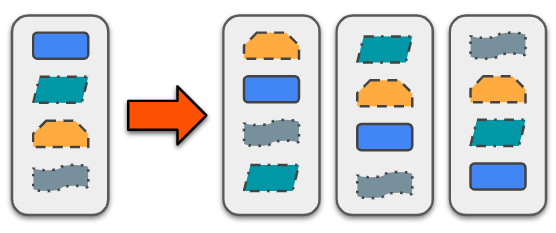
The Presentation Options Test settings have three methods to randomise the order of test content:
Questions
- Randomises the order of all questions in the Test.
- If pages used, questions are randomised within the page.
- Questions must work in any order (ie. do not refer to earlier questions).
Answers
- Randomises the order of MCQ answer options for relevant questions.
- Answers must work in any order. Don't use 'A and B are correct' type answers; use 'All other options are correct' or set multiple correct answers instead.
Pages
- If pagination is set up, this randomises the order of pages within the Test.
- Combine with random question order to also randomise questions within pages.
- Tick Do not randomise first page to pin the first page to the start of the Test (eg. instructions).
Random question selection: Question pools
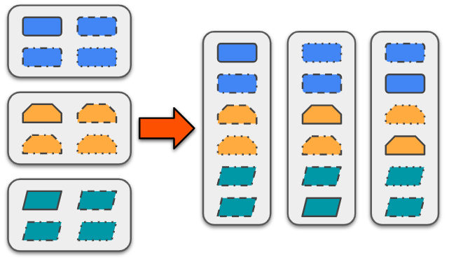
Tip
For fair and valid assessment, all questions within a pool must be of equivalent difficulty, and ideally also the same question type (eg. all multiple-choice). To include questions at different levels or points values, use multiple pools.
Use Question pools to randomly draw a subset of questions from a larger pool of similar questions so that different, but equivalent, questions are presented in each attempt. This is useful for quizzes taken multiple times and for reducing the opportunity for collusion in formal exams.
Within each pool, questions assess the same or similar concepts at an equivalent difficulty level, so it doesn't matter which particular question is drawn. The question pools differ to each other based on factors such as:
- topic: Week 1, Week 2, Week 3 etc.
- difficulty level: easy, medium, hard
- cognitive tasks: remember, understand, apply etc.
The example in the diagram above has three question pools. For each attempt, two questions are randomly selected from each pool, giving six questions in total. There are six possible combinations of two questions from the three pools, giving 216 possible combinations for the six questions in total.
Even for the small question pools in this example it's likely that each attempt/student will receive a unique question set. However, larger question pools are preferable for increased robustness and repeatability; we recommend 5 questions in the pool per question drawn for the Test (ie. if each student gets 4 questions, the pool should contain around 20 questions).
Random formula values: Calculated Formula question type
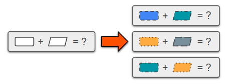
The Calculated Formula question type generates multiple versions of the question with randomly selected formula values.
Students use the same formula with different input values for each question version, which therefore have different correct answers. This is useful for robust assessment where the focus is on correctly performing the calculation, rather than a specific outcome.
For example:
- Question formula: Mug A holds [x] ml of tea, and mug B holds [y] ml. What is the total volume of tea?
- Generated values:
- Student 1: Mug A holds 358 ml of tea, and mug B holds 267 ml. What is the total volume of tea?
- Student 2: Mug A holds 544 ml of tea, and mug B holds 458 ml. What is the total volume of tea?
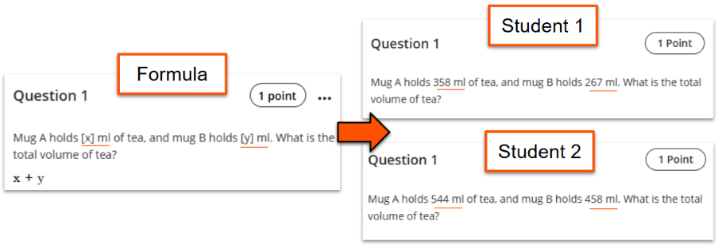
Anonymity
Warning
Anonymously marked Tests are much harder to administer, so avoid anonymity and manually marked Essay question types unless absolutely necessary.
For any Test that contains only auto-marked questions, there is no need for anonymity. Because of the administrative challenges, anonymity should only be used for summative exams with manually marked Essay question types.
If anonymous marking is on for the Test, you:
- can't see who has started or submitted an attempt. This makes it hard to manage exam access, especially for large cohorts.
- can't download answers, overall results or question scores until results are de-anonymised.
Create a Test
Tip
Consider the appropriate location for the Test; with weekly content (specific content) or in the Assessment section (general content or formal assessment).
To create a Test:
- Hover where the Test should appear. Click the plus icon, then Create, then select Test.
- Enter a descriptive name at the top left.
- Click the plus icon to add questions (see Test questions section below).
- Set a Due date within work hours and adjust other settings as needed (see Test settings section below).
- Once confident that the Test is ready, set it as Visible to students or specify Release conditions(see our guide to Content visibility for more detail).
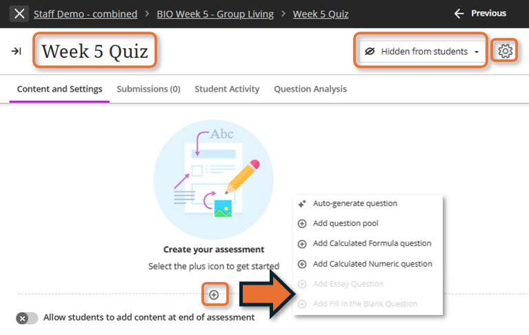
You can build and trial the Test in your personal Ultra sandpit site, and when it is ready use the Copy Content tool to add it to your module/exam site in the relevant location.
Questions
Warning
Essay-type questions must be manually marked before students can view any results or feedback, regardless of when they are set to be released. Don't use Essay questions if the Test won't be manually marked and you want to automatically release results and feedback.
Question types
Key question types are summarised below. See Blackboard's Question Types guide for details of the various other question types available.
| Question type | Description | Grading type | AI generation |
|---|---|---|---|
| Multiple Choice | Pick a single correct answer from options given. | auto graded | can be auto-generated |
| Multiple Answer | Pick multiple correct answers from options given. Can give partial or negative credit. | auto graded | manual only |
| Fill in the Blank | Input the missing word(s) in the given text. Answer can be exact or match a pattern | auto graded | can be auto-generated |
| Matching | Match corresponding items from two groups. Can give partial or negative credit. | auto graded | can be auto-generated |
| Calculated Formula | Calculate the answer to a given formula (eg. 3x + 4y = ?). Values (x/y) are randomly generated so each student has a different question. | auto graded | manual only |
| Calculated Numeric | Similar to Fill in the Blank questions, but for numeric answers. Answer can be exact number or within a range. | auto graded | manual only |
| Essay | Enter a text response (of any length). Can provide a model answer to help grading or as feedback. | manually graded | can be auto-generated |
Add questions
Tip
If a question has any supporting items (eg. figure, table, dataset), use the text editor to add these within the question text rather than as standalone items. This will ensure the item is always displayed with the question.
There are multiple ways to add questions to a Test. Which method is most appropriate depends on the amount of questions to add, whether to display all questions or a random subset, and whether questions have already been added elsewhere in the site.
Manually add questions
Add questions individually within the Test interface. You may find it helpful to draft your questions in another document first.
- Click the plus + icon.
- Select the relevant question type.
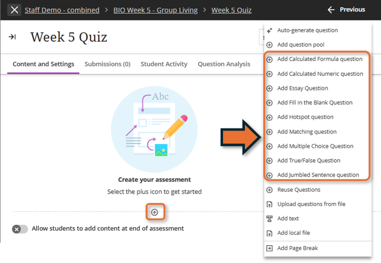
- Enter the question and answers as needed for that question type.
- Optional question settings (availability depends on question type):
- set partial or negative credit for questions with multiple correct answers
- set the question as extra credit
- add automated feedback (auto-marked types) or example correct answer (Essay type only)
- change the points awarded (default = 1 point)
- Click Save.
- Repeat for all questions.
Auto-generate questions with AI
Use the AI Design Assistant Tool to auto-generate key question types based on your site content. See Question types above for the supported types.
Using AI tools effectively
AI-generated content is a starting point for your own content development rather than a finished product. You must always carefully check output for accuracy and appropriacy and adapt as needed.
See our general guide to Artificial Intelligence tools for more details on using AI responsibly.
- Create a Test or open an existing Test or Question Bank. To generate a new Question Bank, select Auto generate and skip step 2.
- Click the plus icon where you would like the question(s) to appear, and select Auto-generate question.
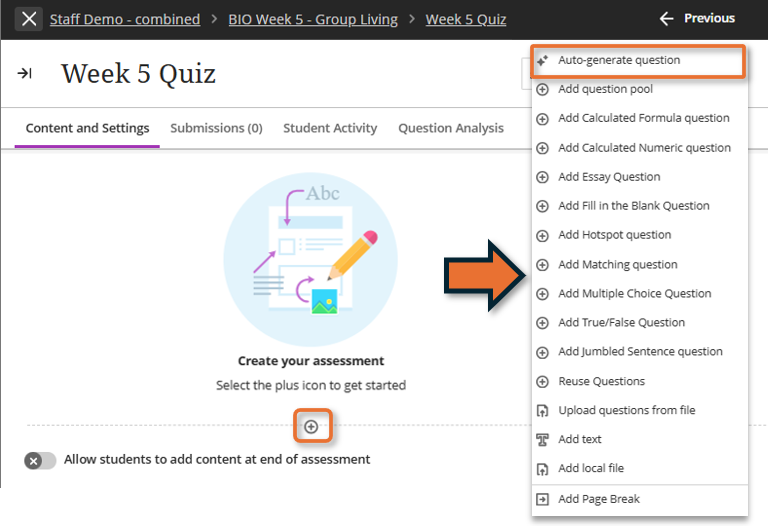
- Define the questions:
- Enter a Description and/or Select course items to help generate more relevant questions.
- Select the Question type to generate. Inspire me! will generate a mix of question types.
- Set the Complexity level and choose how many questions to create.
- Click Generate.
- Review the questions. Select which question(s) to include, or repeat steps 3 and 4 to generate new questions.
- Click Add to Assessment.
- Carefully check the questions for accuracy and appropriacy and edit as needed.
If course items are selected to provide context, questions may be based on procedural instructions within an item. If this occurs, you may find it more effective to instead provide a detailed description of the desired content.
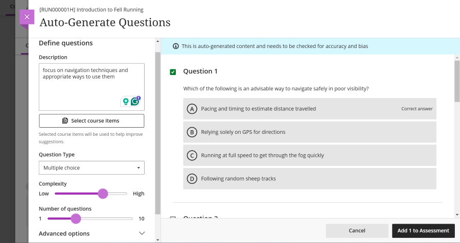
Test questions: interface and examples of generated content
Description: focus on navigation techniques and appropriate ways to use them
Select course items: none selected
Question type: Multiple choice
Complexity: level 7/10
Number of question: 4 (maximum 10)
Content generated:
Question 1. Which of the following is an advisable way to navigate safely in poor visibility?
- A. Pacing and timing to estimate distance travelled [Correct answer]
- B. Relying solely on GPS for directions
- C. Running at full speed to get through the fog quickly
- D. Following random sheep tracks
Further questions are not visible on this screen, scroll to reveal.
Upload questions from a file
Draft questions in a spreadsheet and upload them in .tsv format to your Test. This is helpful to import lots of questions quickly.
To use optional question settings (eg. partial credit), first upload your file and then manually update each question.
Prepare the file
- Make a copy of the Ultra tsv template for Tests Google Sheet
- Enter your questions by editing the BB test tab (contains examples of the formatting required for each question type).
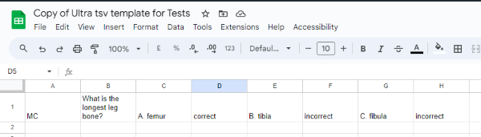
- Download the questions in .tsv format: File > Download > Tab-separated values (.tsv)
Upload the file
- Return to the Test and click the plus + icon.
- Select Upload questions from file.
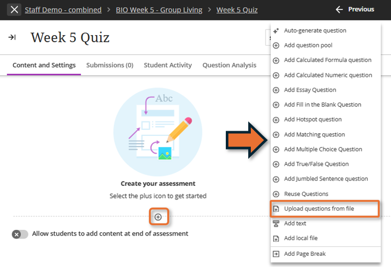
- Select your .tsv file.
- Once the upload is processed, review the status message for any errors.
For more details and examples of the required file format, see Blackboard's guide to uploading questions.
Reuse questions
Add questions that already appear in another Test or Question Bank in the site. This copies questions, so any edits made to re-used questions are not updated in the original question.
- Click the plus + icon.
- Select Reuse questions.
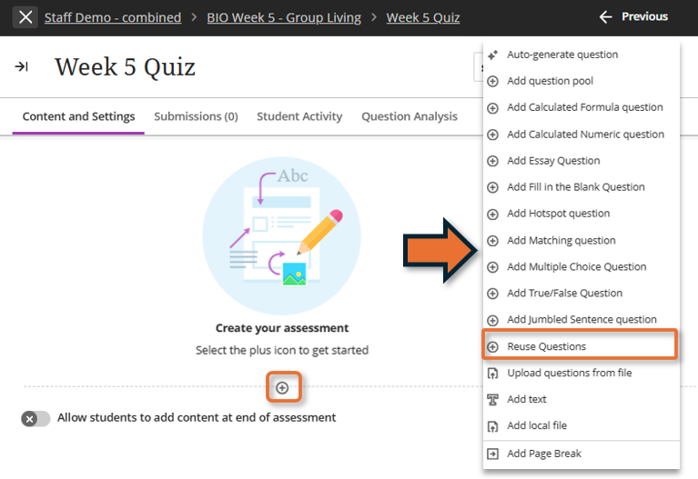
- Select the questions to copy, using the filter options if needed: search by keyword, browse by source (Tests and Question Banks), browse by question type.
- Click Copy questions.
- Once the copy is processed, review the status message for any errors.
Question pools (to draw a random subset of questions)
Build a question pool to randomly draw a subset from in each Test attempt. Choose from questions that already appear in another Test or Question Bank in the site.
Question pools do not copy questions; any edits made to questions in a pool will appear everywhere that question is used. Deleting a question from a Question pool does not delete the question in other locations.
- Click the plus + icon.
- Select Add question pool.
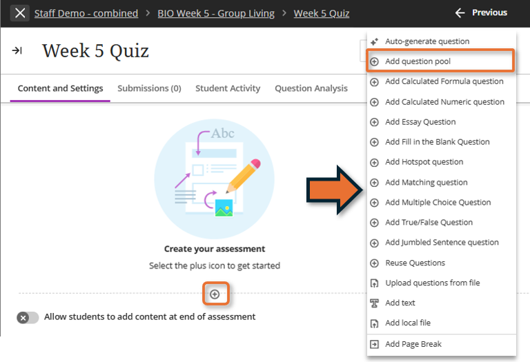
- Select the questions to add, using the filter options if needed: search by keyword, browse by source (Tests and Question Banks), browse by question type.
- Click Add questions.
- Enter the number of questions to display and optionally update the points awarded per question. Click Save.
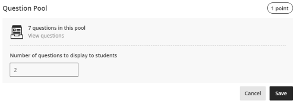
- In edit mode a summary of the pool is shown where you can view the questions and edit settings. Students will see the questions pulled from the pool.
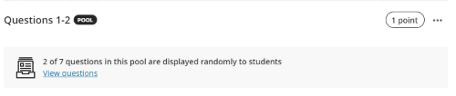
For more details, see the BlackBoard Help guide to Question pools.
Partial & negative credit
These settings can be applied to multiple choice, multiple answer and matching question types.
Partial credit
- Behaviour: awards a proportion of the marks available for each correct option selected. By default, 100% is evenly split between correct answers.
- Example: a question has two correct answers, each worth half of the total points if selected.
- Useful to: award points for any correct answer given.
Negative scoring
- Behaviour: subtracts a proportion of the marks available for each incorrect option selected, with the option to allow negative overall question scores. By default, -100% is evenly split between incorrect answers.
- Example: a question has two incorrect answers, each deducting half of the total points if selected.
- Useful to: discourage guessing or selecting all possible options.
- Alternatives:
- allow partial credit but set the maximum number of options as the number of correct answers (from January 2026).
- don't allow partial credit, so marks are only awarded for fully correct answers.
Bulk edit question points
- Click the three dots icon in the Test Content header, then select Bulk edit points.
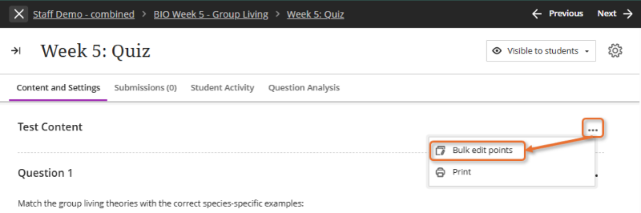
- Use the options to questions:
- tick Select all
- tick specific questions
- filter by selected question types
- In the Points box, enter the new points value, then click Update
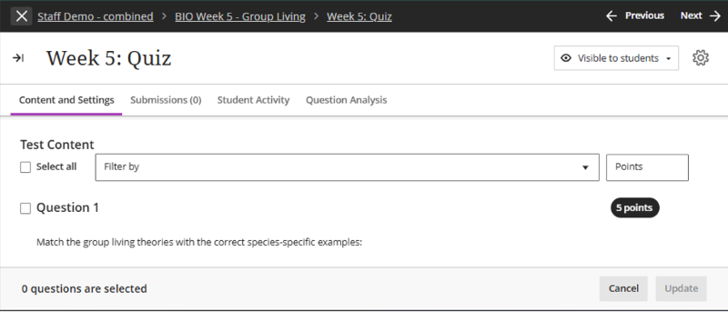
Download question paper
You can print or download your Test as a PDF, along with an automatically-generated answer key. This could be useful for archiving and sharing with external examiners, reviewers etc.
Tip
If randomisation is used, a new version is generated each time the Test is printed.
To print or save a Test:
- Click the three dots icon in the Test Content header, then select Print.
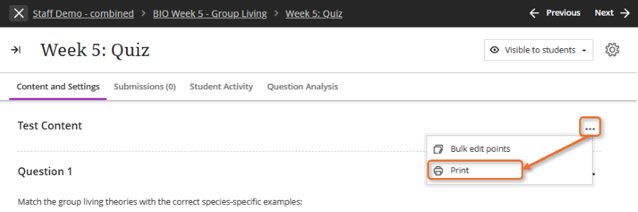
- Click Print in the pop up box.
- The answer key (shown first) and test are generated and shown in print preview. Save as PDF or send to the printer.
Settings
Warning
Very specific settings are required for formal exams using Test. You must contact us well in advance to set up these up correctly. The advice here should not be considered sufficient guidance for this use case.
Click the cog icon to open full Test settings. This is found:
- in the heading banner in most cases if the Test is within a Learning Module.
- at the top of the summary Assessment settings panel next to test content on a larger screen or if the Test is outside a Learning Module.
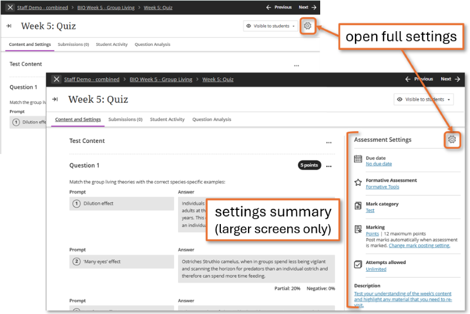
Details & Information (Due date)
Key consideration: Does your Test need a due date?
Setting a due date/deadline (eg. submit by 15/05/2026 14:00) is only recommended for summative coursework tasks.
If required, set a due date and time during core work hours and liaise with your departmental assessment administration team to manage deadline extensions for SSPs, ECAs etc (eg. 3 day extension). Students must be able to start and submit late attempts.
These settings can be updated after students have started their submissions.
- Due date: tick No due date or set a due date and time during core work hours. If used, liaise with your departmental assessment administration team to manage deadline extensions for SSPs, ECAs etc.
- ! Do not tick ! Prohibit late submissions: in-progress attempts are automatically submitted at the deadline (not marked late). Can't start new attempts after the deadline.
- ! Do not tick ! Prohibit new attempts after due date: in-progress attempts at the deadline can be manually submitted after the deadline (marked late). Can't start new attempts after the deadline.
- Allow class conversations: attaches a Discussion to the Test. Recommend to leave unticked.
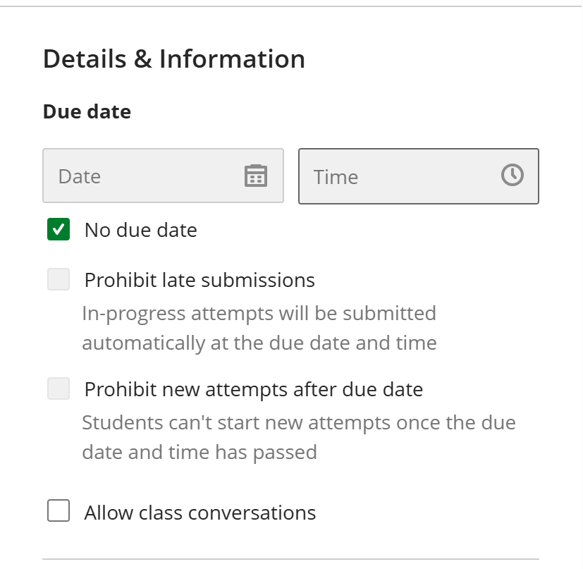
Presentation Options
Key consideration: randomisation for robust assessment
Randomising test content for each attempt can support robust assessment by reducing opportunity for collusion, especially for remote uses of Test. To use random order, make sure that questions/answers do not need to appear in a specific order.
Presentation options mostly relate to the order that questions appear in for each attempt. See the randomisation section for more details.
These settings cannot be updated after students have started their submissions.
- Display one question at a time: shows each question as a separate page. May be useful for longer Tests or with maths-heavy content.
- ! Do not tick ! Prohibit backtracking: stops students going back to previous questions.
- Randomise questions: shows all questions in a random order. With pagination, randomises questions within pages.
- Randomise answers: shows MCQ options in a random order.
- Randomise pages: if pagination is used, shows pages in a random order. The first page can be excluded (eg. instructions page).
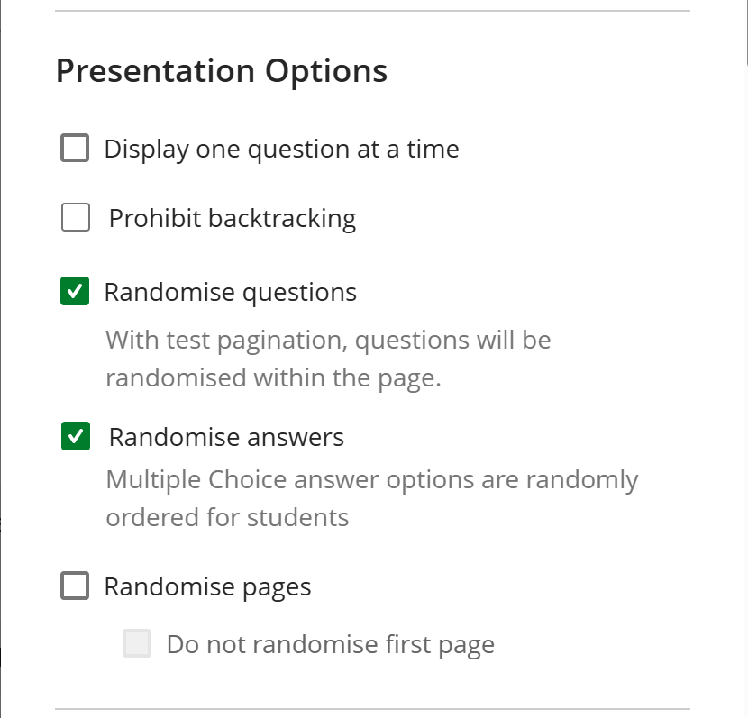
Formative Tools
Key consideration: is the Test formative?
We recommend applying both of these settings for any formative or practice use of Test.
These settings can be updated after students have started their submissions.
- Formative Assessment: shows a formative label on the Test. This doesn't exclude the item from any automatic Gradebook mark calculations.
- Display formative label to students: default on if Formative assessment is ticked. Leave ticked.
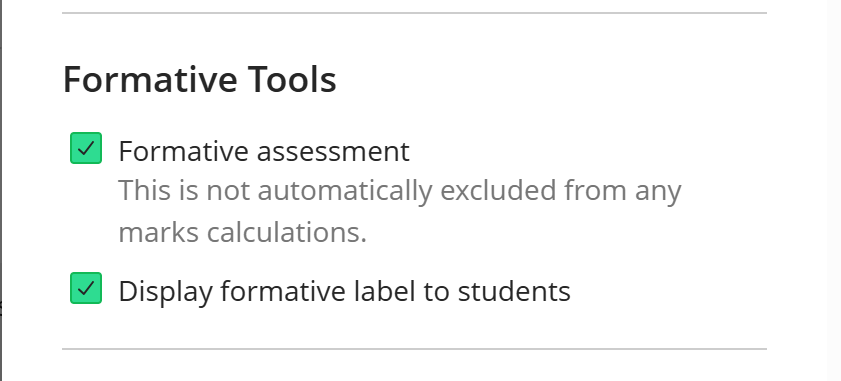
Marking & Submissions
Key consideration: does marking need to be anonymous?
Anonymity should only be applied if absolutely required for a summative Test containing manually marked questions.
Key consideration: should marks be posted (released) automatically?
- To automatically release marks immediately after submission, use only auto-marked question types and tick Assessment mark: post automatically.
- To release all marks together, untick Assessment mark: post automatically and manually post marks when ready.
- Essay-type questions must be marked manually before any marks can be released. Don't use this type if results need to be returned automatically.
Unless otherwise stated, these settings can be updated after students have started their submissions.
- Mark Category: may change the icon shown on the item, but doesn't have any real impact.
- Attempts allowed: how many test submissions can be made. For practice quizzes and summative coursework, set to Unlimited. Can't be reduced after students start their submissions.
- Attempts to mark: which test submission to mark. In most cases leave as Last attempt.
- Mark using: leave as the default Points, change to Percentage or use a mark schema to convert marks to qualitative categories.
- Maximum points: automatically calculated from individual question scores, cannot be edited.
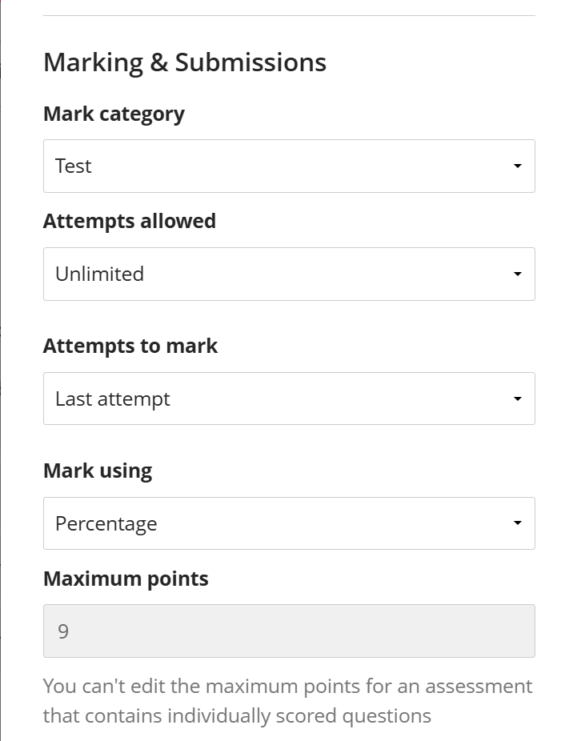
- Anonymous marking: Hide student names: only use if absolutely required for summative Tests with manually marked questions. Can't be used with automatic mark posting. Can't be updated after students have started their submissions.
- Evaluation options: Delegated marking: assign markers to specific groups of students. Only required for manually marked questions and large cohorts.
- Assessment mark: post automatically: immediately releases overall mark after an attempt is submitted (if all auto-marked questions) or marked (if includes essay questions). Untick to manually manage overall mark release. See Assessment results to manage access to Test content after marks are released.
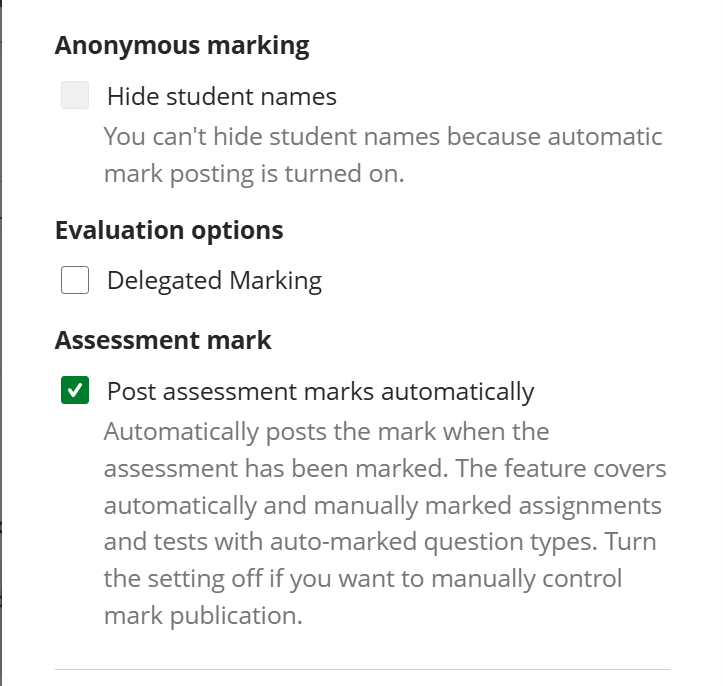
Assessment results
Key consideration: what results and feedback should be given?
What results information should be shown to students varies greatly across uses of Test; a practice quiz may immediately show all question scores and correct answers after submission, whereas a formal exam may restrict results feedback to viewing their submission only on a set date.
Warning
Essay-type questions must be manually marked before students can view any results or feedback, regardless of when they are set to be released. Don't use Essay questions if the Test won't be manually marked and you want to automatically release results and feedback.
These settings can be updated after students have started their submissions. See the Student view: Results section below for more details of how the various results options appear to students.
What students can view, in addition to the posted overall mark:
- Submission view: the questions and their own submitted responses. Required to view any of the below options.
- Automated question feedback: any correct or incorrect answer feedback added for auto-marked questions. The correct answer isn't specified, but may be stated or implied in the feedback text added.
- Question scores: scores for individual questions. The correct answer is not specified, but it may be possible to deduce this. Required to view correct answers. Can't be edited if anonymous marking is on.
- Correct answers: correct answers for auto-marked questions and any example correct response added for essay questions. It is not possible to show only one of these feedback components. Can't be edited if anonymous marking is on.
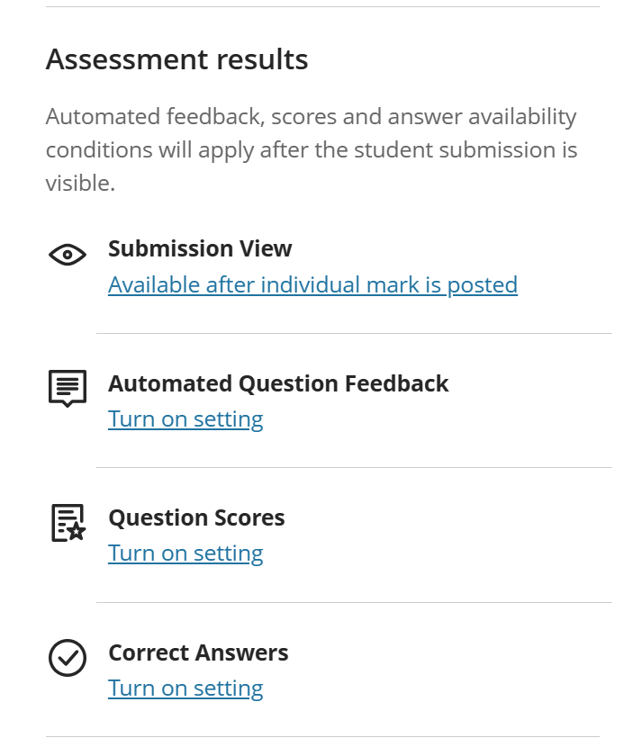
Results can be released at various times:
- After submission: releases immediately after submission. Applies to submission and automated feedback only.
- After individual mark has been posted: releases after automatic or manual mark posting. Does not apply for automated feedback.
- After due date: releases after the deadline passes, if set.
- ! Do not tick ! After all marks have been posted: won't release until all students with access to the Test have received an overall mark, which often does not occur.
- On specific date: releases chosen results components at a specific date and time. Often used to release formal exam results.
- ! Do not tick ! One time: allows a single view after submission. If this restriction is needed, instead manage site and Test availability to allow access for a specific period.
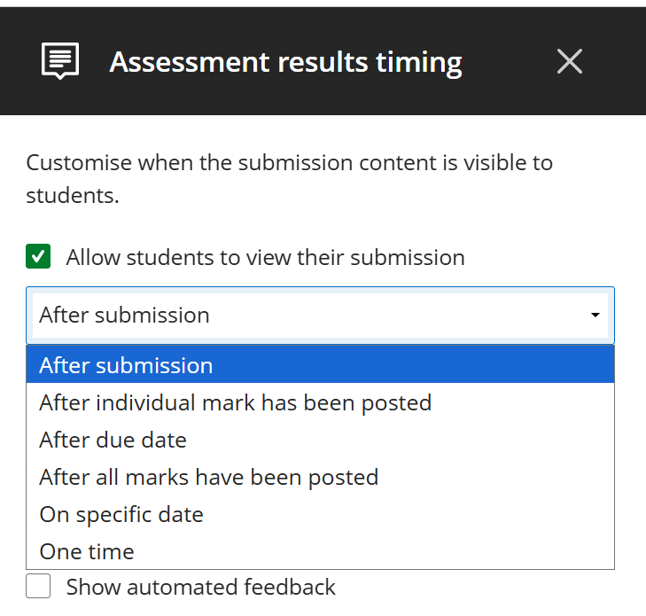
Assessment security
Key consideration: is fine access control needed?
If it's not known exactly who will need access to your Test and when, access can be managed by setting up an access code to open the Test. This may be useful for escape room-type activities or to manage starts across multiple rooms for in-person exams with Test.
This setting can be edited after students start their submissions.
- Access code: click Add access code and toggle on the slider to require students to enter a 6-digit code to begin an attempt.
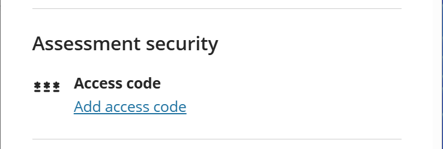
Additional tools & Description
Unless stated, these settings cannot be updated after students have started their submissions.
- Time limit: adds a timer for attempts, with optional automatic submission at the end. Used for formal exams, but otherwise do not use without a clear pedagogical need. If used, must apply SSP extra time extensions for relevant students.
- Assign to groups: to set as a collaborative group task. May be useful for escape room-type activities, but otherwise not likely to be useful for other uses of Test.
- Originality report: adds Turnitin originality reporting. This should not be required; if you think this is needed, it's likely a different tool will be more suitable than Test.
- Description: adds a contextual note to the Test item on the Course Content page. Maximum 750 characters. Can be updated after students have started their submissions.
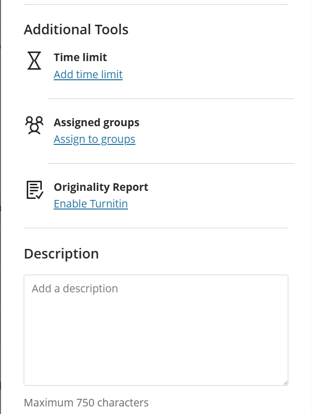
Extensions and extra time
For Tests with a deadline (eg. submit by 15/05/2027 14:00), liaise with your departmental assessment administration team to manage deadline extensions for SSPs, ECAs etc (eg. 3 day extension).
For Tests with a clear pedagogical need for a time limit (eg. complete within 2 hours), extra time accommodations must be set for students with a relevant SSP (eg. 25% extra time). This must be set in each site for each student. See our Accommodations for SSPs guide for details.
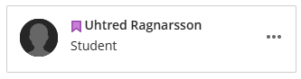
Marking & results
Review auto-marked scores
For fully auto-marked Tests, no manual marking is required. You can review the marks in the Test's Submissions tab or in the Gradebook Marks tab. See the guide to view Gradebook data for more details.
Manual marking
Tip
Manual marking is required if a Test includes any Essay type questions.
Make sure that the Test is Hidden from students to prevent accidentally releasing marks early. If using a separate exam site, also make sure the site is Closed.
- To open a Test submission, click the Submissions tab within the Test and select an attempt from the list. For other methods to access submissions, see our guide to open Ultra Assignment submissions.
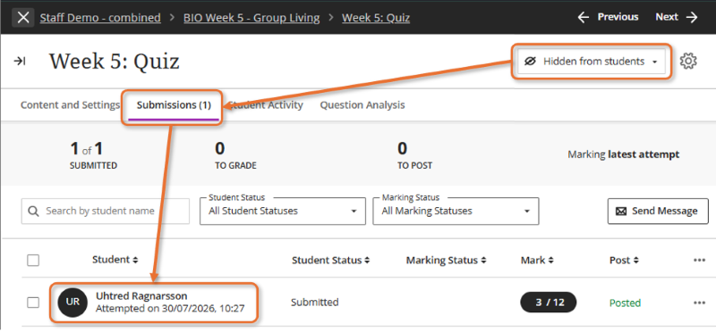
- If a Due Date was set and a student has made a late submission, the correct attempt to mark may not be the default attempt presented, so you will need to check which attempt to mark. See our Assignment marking guide for details.
- Marking methods:
- Mark by student: The default method. Mark each student's exam as a whole. If randomisation was used, question order will differ between attempts.
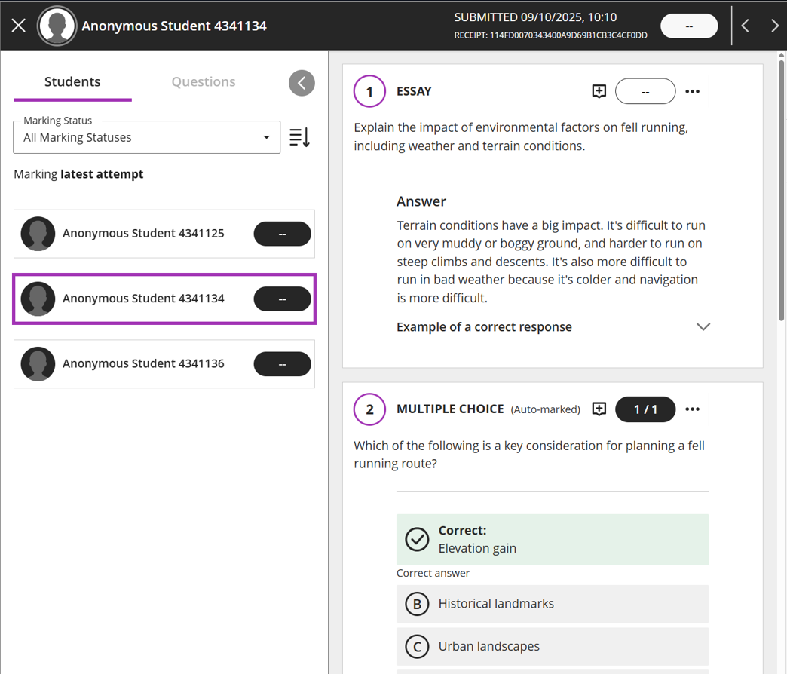
- Mark by question. Click the Questions tab above the student list to group all the responses for each question. This is useful to focus on Essay questions that require manual marking. The question text is shown above the responses.
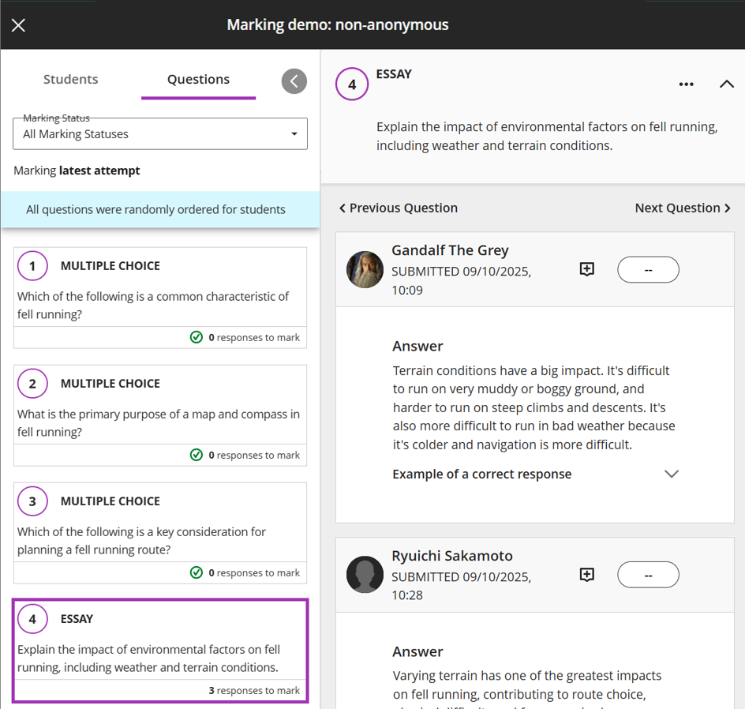
- Mark by student: The default method. Mark each student's exam as a whole. If randomisation was used, question order will differ between attempts.
- Review each essay question response. If an example correct response has been provided, click the chevron icon in the bottom right to show/hide it. Enter a score in the mark pill in the top right.
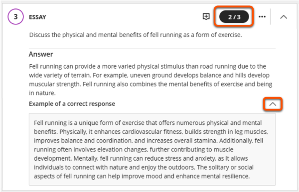
- Once each essay question in an attempt has been marked, the final score is updated in the overall mark pill (on Student view).
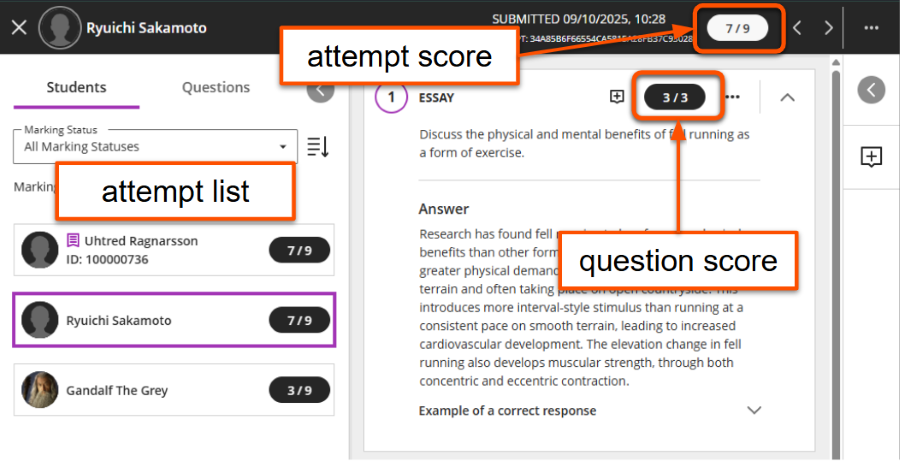
- When marking is complete, click Post all marks on the Test submissions tab (if anonymously marked, this will also de-anonymise results).
- When ready to release marks, make the Test (and site, if needed) visible to students.
Student view: results
After marks are released, students can view various aspects of assessment results and feedback via the original Test interface. These are summarised here, see the Assessment results settings section for details.
| View option | What this shows | Earliest availability |
|---|---|---|
| Submission view | Questions and responses, plus overall mark (if posted) | After submission |
| Automated question feedback | Feedback added for correct/incorrect answers (auto-marked questions) | After submission |
| Question scores | Individual question scores | After marks posted |
| Correct answers | Correct answers (auto-marked questions) and any example correct responses added (essay questions) | After marks posted |
What students see: MCQs
These examples show the student view of multiple choice question results with various combinations of release settings.
Example question, answers and feedback text
The question shown in all interface examples:
- Question: What type of footwear is generally recommended for fell running?
- Answer options:
- Basketball shoes for extra ankle support.
- Heavy hiking boots.
- Standard road running shoes.
- Trail running shoes with good grip and support. [correct answer]
- Automated feedback:
- Correct: Well done - good grip is very important on muddy and rocky terrain.
- Incorrect: Consider what footwear is most appropriate for running in varied terrain.
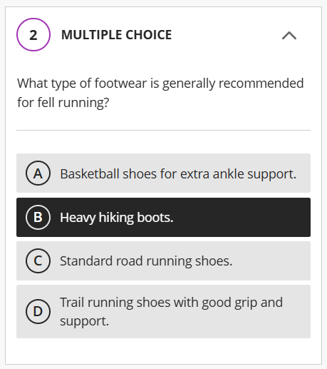
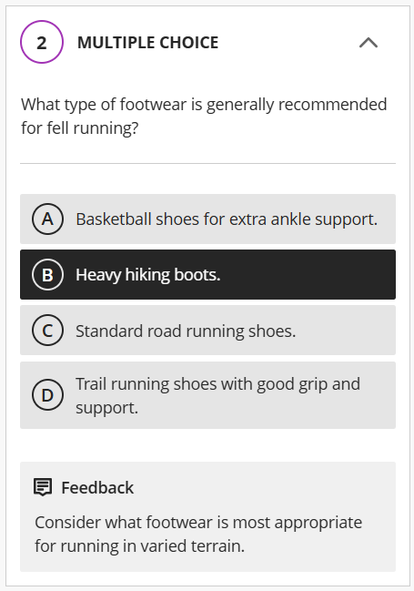
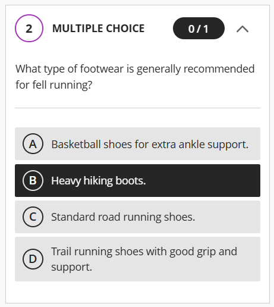
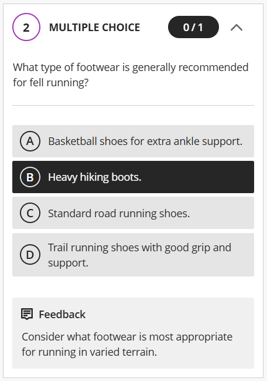
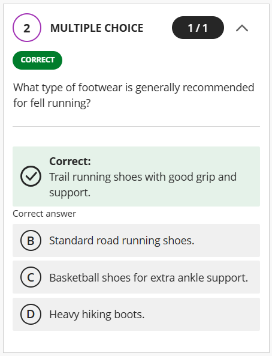
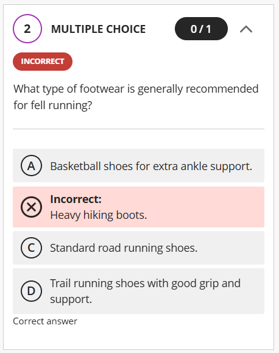
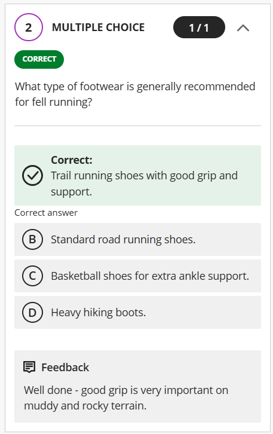
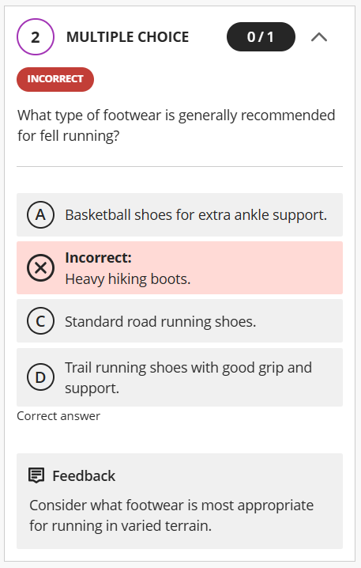
What students see: Essay questions
These examples show the student view of essay question results with various combinations of release settings.
Example question, answers and feedback text
The question shown in all interface examples:
- Question: Explain why navigation is a crucial skill for fell runners.
- Answers:
- Correct (3/3): Fell running is deeply rooted in tradition and self-sufficiency, so GPS navigation is not allowed in races. Courses are also rarely marked, as generally the only requirement is to visit checkpoints in the right order. This means runners need to be able to navigate using a map and compass to choose their own routes.
- Partially correct (2/3): Runners need to navigate with map and compass because GPS is forbidden in races. It's also generally a very important skill for personal safety, so you can get yourself off the mountain in bad weather or without a phone.
- Example correct answer:
1 point each, up to a maximum of 3 points:
- GPS navigation is not allowed
- routes are usually unmarked
- can choose your own route between points
- part of the fell runner's self-sufficiency ethos
- important for personal safety
Download results and question scores
Tip
An anonymously marked Test must be de-anonymised (by posting all marks) before results can be downloaded.
After marking is complete, you can also download overall marks or responses and marks for each question.
Question Analysis
The Question Analysis tool gives analytics data on:
- General Test summary: average overall score, number of possible questions, number of completed attempts, average time spent
- Individual questions:
- discrimination: measure of how well the question differentiates between high and low-scoring students
- difficulty: percentage of students who answered correctly
- breakdown of answers selected (auto-marked question types)
This can be useful to understand student performance and review and refine your question practice for future tests. For example, if one question is consistently answered incorrectly, you can review the question wording and answers chosen to see if the question is genuinely difficult, or if there is as issue with the question wording that could be tweaked for next time.
See Blackboard Help's guide to Question Analysis for more details.